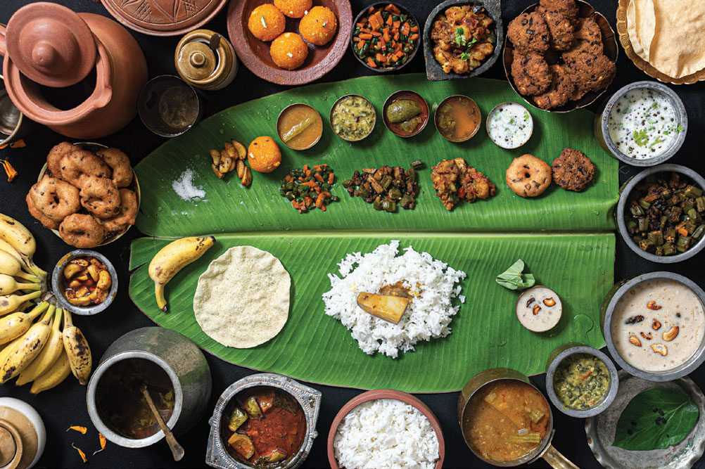

TamilNadu Traditional Meal on Banana Leaf
Benefits of eating on banana leaf:
The first and foremost reason why banana leaf is used for serving food is because of its wide size and the partition that runs at centre which gives enough space to place variety of foods in a single leaf without mixing with each other. As Indian lunches are diverse and have many courses, only banana leaf can accommodate all courses and it is water proof too, which is very helpful for eating liquid dishes like Sambar, Rasam, curd, and Payasam.
Tender leaves are flexible and can be folded in any angle.
These leaves are non-sticky and so it is used for lining steamer trays
One of the major benefits of this leaf is that they are bio degradable and it won’t be a problem to discard them. Even burning these leaves is not harmful to the atmosphere.
Tamilians consider it to be an act of respect to serve the guests in banana leaf.
Eating hot food in this leaf is very healthy and hygienic. While the hot food is served on the leaf, rich nutrients from the leaf is emitted, which infuses with the food and eventually we intake it as we eat the food.
These leaves are rich in polyphenols such as epigallocatechin gallate, or EGCG, which is found in green tea.
Polyphenols are natural antioxidants found in many plant based foods. So eating on a plantain tree increases the EGCG level in our body and slows down the process of aging.
Top of all, the aroma that arises from the leaf when the hot food is laid on it is incredible. Even the ones don’t feel hungry would, find their mouthwatering when the food is served on the plantain leaf.
Even in USA a journal “American Journal of Clinical Nutrition,” is conducting an extensive research on how polyphenols affect human cells, the oxidative process and its impact on disease prevention.
